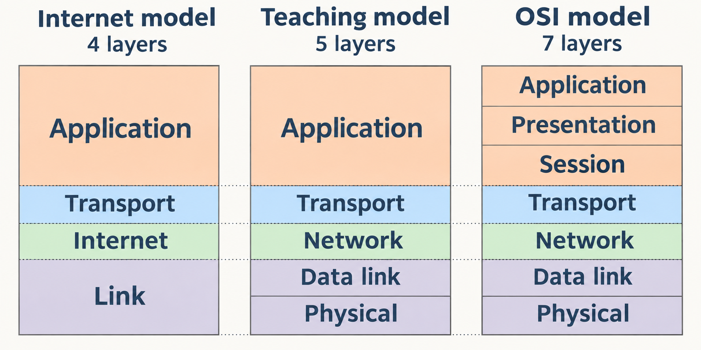
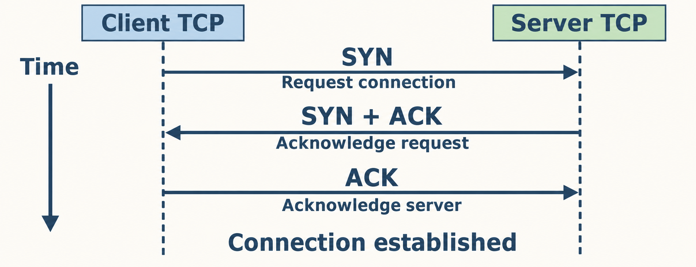
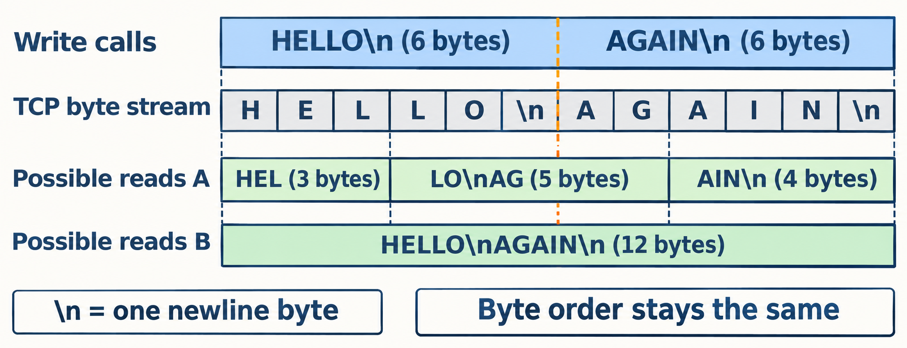
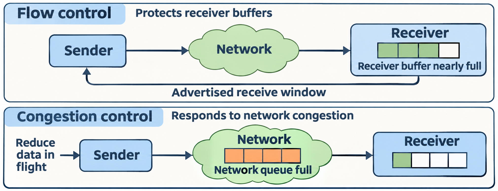

Network Communication
A network lets programs exchange data.
Each program has its own memory.
Data crosses the network as bytes.
The sender encodes its data.
The receiver interprets the bytes.
Remote programs execute independently.
The other program can fail.
The network can delay communication.
A protocol defines agreed communication rules.
Client and Server Roles
A client initiates communication with a service.
A server provides a service to clients.
Client and server describe communication roles.
One computer can perform both roles.
| Client | Server |
|---|---|
Locates the service. | Makes the service available. |
Sends a request. | Processes the request. |
Interprets a reply. | Produces a reply. |
The Four-Layer Internet Model
A layer groups related communication responsibilities.
Each layer uses the service below it.
| Layer | Responsibility | Example |
|---|---|---|
Application | Define message meaning. | A request and reply |
Transport | Carry data between programs. | A transport protocol |
Internet | Route packets across networks. | Internet Protocol (IP) |
Link | Transfer data over one local link. | Wi-Fi or Ethernet |
Other Network Layer Models
The five-layer model separates physical transmission.
The OSI (Open Systems Interconnection) model uses seven layers.
These models describe communication at different levels of detail.

IP Addresses and Hostnames
An IP address identifies a network interface.
One computer can have several addresses.
DNS (Domain Name System) resolves hostnames to IP addresses.
One hostname can resolve to several addresses.
A resolved address does not prove service availability.
| Value | Example |
|---|---|
Hostname |
|
IPv4 address |
|
IPv6 address |
|
Example:
basics/AddressLookupDemo.java
Port Numbers
One computer can run several network services.
An IP address alone cannot choose the service.
A destination port helps select the receiving service.
Port numbers are 16-bit values.
Their range is 0 to 65,535.
Common service ports are conventions.
| Service | Common port | Purpose |
|---|---|---|
SSH (Secure Shell) |
| Remote login |
DNS |
| Hostname lookup |
HTTP |
| Web requests |
HTTPS |
| Encrypted web traffic |
Port Ranges and Reserved Numbers
IANA (Internet Assigned Numbers Authority) manages service-port assignments.
Individual entries can be assigned, unassigned, or reserved.
Reserved numbers are held for special purposes.
Port
0is reserved.
Dynamic/private ports have no IANA service assignment.
Use an available value for local practice.
| Range | Name | Typical use |
|---|---|---|
| System / well-known | Common service assignments |
| User / registered | Other service assignments |
| Dynamic / private | Local and temporary use |
Network Endpoints
An endpoint combines an IP address with a port.
Both sides have an endpoint.
The server exposes its service endpoint.
The OS usually chooses the client source port.
| Role | IP address | Port | Endpoint |
|---|---|---|---|
Server |
|
|
|
Client |
|
|
|
Network Sockets
A socket is a communication resource managed by the operating system.
Programs use sockets to exchange data.
Binding assigns a local endpoint to a socket.
The endpoint contains an IP address and port.
A socket can also track a remote endpoint.
Closing a socket releases its communication resources.
Loopback and Server Binding
Binding selects the socket’s local endpoint.
localhostrefers to the current computer.Remote clients need a reachable server address.
Firewalls can still block access.
| Bind address | Reachability |
|---|---|
Loopback: | Same computer only |
A specific interface address | Through that interface |
Wildcard: | Local interfaces in that address family |
TCP: Connections and Byte Streams
TCP (Transmission Control Protocol) is a connection-oriented transport protocol.
A connection maintains state at both endpoints.
The peers establish this state before normal data exchange.
A byte stream is a continuous sequence of bytes.
The connection carries one stream in each direction.
Example: A Connected TCP Socket
Each side has its own socket.
Buffers hold bytes temporarily.
Received bytes wait to be read.
Outgoing bytes wait to be sent.
| Part | Client’s socket |
|---|---|
Local endpoint |
|
Remote endpoint |
|
Transport protocol | TCP |
Connection state | Connected ( |
Receive buffer | 3 bytes waiting to be read |
Send buffer | 5 bytes waiting to be sent |
TCP Guarantees and Application Duties
TCP provides reliable stream delivery.
It delivers bytes in order.
It retransmits lost data.
It removes duplicate byte ranges.
The application defines its messages.
It decides what a successful reply means.
A connection can fail before communication completes.
TCP Connection Establishment
A handshake establishes connection state at both endpoints.
The OS performs the handshake.
The application requests a connection.

The TCP Socket Lifecycle
A TCP server uses two kinds of sockets.
A listening socket accepts new connections.
A connected socket carries data for one client.
| Stage | Server | Client |
|---|---|---|
Prepare | Bind a listening socket. | Choose the server endpoint. |
Connect | Accept a connected socket. | Request a connection. |
Exchange | Read and write stream bytes. | Read and write stream bytes. |
Finish | Close the connected socket. | Close the connected socket. |
Blocking Operations and Progress
A blocking operation pauses its calling thread.
The conversation must allow progress.
Two peers that both read first can wait indefinitely.
| Operation | What it may wait for |
|---|---|
| Connection establishment |
| A connection to accept |
| Input bytes |
| Output buffer space |
Example: Accepting a Connection
ServerSocketrepresents the listener.accept()returns a connectedSocket.
try (ServerSocket server = new ServerSocket(55000)) {
try (Socket client = server.accept()) {
System.out.println(client.getRemoteSocketAddress());
}
}The accepted socket belongs to one connection.
Closing it leaves the listener open.
Example:
tcp/ConnectionServer.java
Example: Connecting to a Server
The client supplies the server hostname and port.
The client waits while TCP establishes the connection.
try (Socket socket = new Socket("localhost", 55000)) {
System.out.println(socket.getLocalSocketAddress());
System.out.println(socket.getRemoteSocketAddress());
}The local endpoint includes the client source port.
Example:
tcp/ConnectionClient.java
Writes and Reads Have Different Boundaries
A TCP read can return part of a write.
A TCP read can combine bytes from several writes.
The application reconstructs complete messages.
The diagram uses a newline as a message boundary.

Application Protocols
An application protocol defines message rules.
Format specifies how a message is written.
Meaning specifies how a message is interpreted.
Sequence specifies which message comes next.
A request asks a peer to perform an action.
A reply reports the result.
Character Encoding
An encoding maps characters to bytes.
Both peers must use the same encoding.
One character can require several bytes.
A streaming decoder preserves partial character data.
Encoded size counts bytes, not characters.
| Character | UTF-8 bytes |
|---|---|
|
|
|
|
|
|
Example:
basics/Utf8EncodingDemo.java
Message Framing
Framing defines where each message ends.
Both peers must follow the same framing rule.
| Rule | How the receiver finds the boundary |
|---|---|
Delimiter | Read until a chosen marker. |
Length prefix | Read the declared number of bytes. |
Fixed size | Read the agreed number of bytes. |
Line-Based Framing
One line carries one message.
The sender ends the message with a line ending.
readLine()can wait for the line ending.It returns the text before that ending.
Payload line breaks need a rule.
A protocol can forbid them.
PING\n
PONG\nExample:
basics/StreamReadDemo.java
Example: A Request and Reply
The client sends one request before waiting.
The server reads the request before replying.
| Step | Client | Server |
|---|---|---|
1 | Send | Wait for a request line. |
2 | Wait for a reply line. | Read |
3 | Keep waiting. | Send |
4 | Read | Finish the exchange. |
Example: Text Stream Wrappers
Each peer wraps its connected socket’s streams.
The reader decodes UTF-8 bytes into characters.
The writer encodes characters as UTF-8 bytes.
static BufferedReader reader(Socket socket) throws IOException {
return new BufferedReader(new InputStreamReader(
socket.getInputStream(), UTF_8));
}
static BufferedWriter writer(Socket socket) throws IOException {
return new BufferedWriter(new OutputStreamWriter(
socket.getOutputStream(), UTF_8));
}Buffering and Flushing
Buffered output can remain inside the sender.
flush()sends buffered output through the socket.The protocol defines what a reply confirms.
| Observation | What we know |
|---|---|
A buffered | The writer accepted the characters. |
| The writer passed its buffered output to the socket. |
An expected | The server recognized |
Example: Exchanging Two Lines
The client sends before waiting for a reply.
Each peer creates its own stream wrappers.
reader(socket)suppliesin.writer(socket)suppliesout.
// Client fragment
out.write("PING\n");
out.flush();
String reply = in.readLine();
// Server fragment
String request = in.readLine();
if ("PING".equals(request)) {
out.write("PONG\n");
out.flush();
}Example:
tcp/PingServer.java,tcp/PingClient.java
Validating Incoming Messages
A framed message can still be invalid.
Check the command.
Check required fields.
Check value ranges.
Define a response to invalid input.
Return an error reply or close the connection.
Bound the accepted message size.
Example:
tcp/ValidatedPingServer.java,tcp/MalformedClient.java
Testing Framing and Validation
Test how the receiver separates and checks messages.
| Test input or action | Behavior to check |
|---|---|
Send one line in several writes. | Read one complete message. |
Send two lines in one write. | Read two separate messages. |
Keep the connection open without a line ending. | The reader waits for the line ending. |
Send an invalid command. | Reject it according to the protocol. |
Failure Stages
Identify the stage before choosing a response.
| Stage | Possible observation |
|---|---|
Name resolution | The hostname cannot be resolved. |
Connection setup | The connection is refused or times out. |
Message exchange | The peer closes or the read times out. |
Message interpretation | The reply violates the protocol. |
End-of-Stream
EOF (end-of-stream) means no more input bytes.
Connection closure can appear in different ways.
An orderly peer shutdown can produce EOF.
A reset can produce an exception.
The protocol decides whether EOF is expected.
| Input operation | EOF result |
|---|---|
|
|
|
|
Connection and Read Timeouts
A connect timeout limits the wait for a connection.
A read timeout limits one blocking read.
An operation deadline limits the whole exchange.
Several reads can exceed one read-timeout period.
try (Socket socket = new Socket()) {
socket.connect(new InetSocketAddress(host, 55000), 2_000);
socket.setSoTimeout(3_000);
// Read and write through this connected socket.
}Example:
tcp/PingServer.java,tcp/WaitingClient.java
Missing Replies and Uncertain Outcomes
A missing reply can leave the result unknown.
The request may never have arrived.
The server may have processed it.
A retry can repeat an action.
Decide whether repetition is safe.
A timeout alone does not prove failure.
Example:
tcp/CloseWithoutReplyServer.java,tcp/PingClient.java
Connection Ownership and Cleanup
The code that owns a socket closes it.
Try-with-resources closes the socket on scope exit.
It also runs after an exception.
Closing a connected socket closes its streams.
try (Socket socket = new Socket(host, port)) {
BufferedReader in = reader(socket);
BufferedWriter out = writer(socket);
// Exchange messages inside the ownership scope.
}Diagnosing Communication
Record progress through the conversation.
Connection accepted
Request received
Reply sent
Connection closed
Include the local and remote endpoints.
Record timeouts and protocol errors.
Check: A Stalled Conversation
Both peers read first. Who should send first in this exchange?
The client sends the request before reading the reply.
Why does
readLine()wait when an open connection has no line ending?The receiver is waiting for a complete line.
The sender buffers a complete line. What should it do before waiting for a reply?
Call
flush()to pass buffered output to the socket.
The peer closes without a reply. How should the client handle EOF?
Report the missing reply.
Treat the request’s outcome as unknown.
Serial Connection Handling
A serial server handles one connection at a time.
while (true) {
Socket client = server.accept();
handle(client);
}The server accepts the next client after the handler returns.
One idle client can hold up other clients.
Example:
tcp/SerialPingServer.java,tcp/PingClient.java
Concurrent Connection Handling
The accept loop and client handlers do different work.
The accept loop receives new connections.
A handler manages one connection.
Client sessions can overlap.
One waiting handler need not block every client.
Handlers must coordinate changes to shared data.
Example: One Task per Connection
A virtual thread can run a blocking connection handler.
try (var tasks = Executors.newVirtualThreadPerTaskExecutor();
var server = new ServerSocket(55000)) {
while (true) {
Socket client = server.accept();
client.setSoTimeout(3_000);
tasks.submit(() -> handle(client));
}
}The accept loop continues after handing off the socket.
Example: A Connection Handler
static void handle(Socket socket) {
try (socket) {
var in = reader(socket);
var out = writer(socket);
if ("PING".equals(in.readLine())) {
out.write("PONG\n");
out.flush();
}
} catch (IOException e) {
System.err.println(e.getMessage());
}
}Each handler owns its socket.
This handler serves one request per connection.
Example:
tcp/ConcurrentPingServer.java,tcp/PingClient.java
Testing Concurrent Clients
Start two independent clients.
Keep one client waiting.
Let the other send a complete request.
Check that the active client receives a reply.
Check that one disconnect leaves other clients usable.
Persistent Connections and Server Updates
One TCP connection can carry many messages over time.
The server can send an update without a new request from that client.
| Communication pattern | What triggers the server's message? |
|---|---|
Request and reply | A client sends a request. |
Server update | Shared state changes while clients remain connected. |
Example: several clients watch the same counter. A change is sent to all of them.
Example: Commands and State Updates
Two clients watch and change one counter on the server.
| Message | Direction | Meaning |
|---|---|---|
| Client to server | Add one and notify every client. |
| Client to server | Set the counter to zero and notify every client. |
| Client to server | Close this client's connection. |
| Server to clients | Revision |
A snapshot is a copy of the current state.
A revision increases after each
ADDorRESET.
Receiving Server Updates
Keep the connection open for many commands and server updates.
A background reader receives updates while the user sends commands.
Use one reader for incoming messages and one sender for outgoing commands.
// Background receiver
for (String message; (message = in.readLine()) != null;) {
System.out.println("Server: " + message);
}
// The command thread can send while the receiver waits.
out.write("ADD\n");
out.flush();Example: tcp/LiveCounterClient.java
Independent Server Read and Write Paths
The persistent server gives each connection two activities.
A handler keeps reading commands from its client.
An outbox is a queue of messages waiting to be sent.
Handlers place replies and server updates into that outbox.
One sender is the only writer to that socket's output stream.
The sender can write an update while the handler waits for another command.
handlers → client's outbox → sender → socket
Broadcasting Shared State
A broadcast sends the same update to every connected client.
Under one lock, change the state and queue the resulting snapshot.
Each connection has one sender, which writes queued messages in order.
synchronized void addOne() {
value++;
revision++;
String snapshot = state();
for (Client client : clients) {
client.outbox.add(snapshot);
}
}
// Each sender takes a message, writes it, and flushes outside this lock.Example: tcp/LiveCounterServer.java
A Late Client Receives the Current State
A new client needs the latest value before following future changes.
| Event | State received |
|---|---|
Client A sends | A reaches |
Client B connects. | B immediately receives |
Either client sends | Both receive |
Register the client and queue its initial snapshot under one lock.
The same sender delivers that snapshot before later updates.
Resource Limits
Each connection uses memory and an OS socket handle.
Limit the work clients can submit.
Limit message sizes.
Limit active connections.
Limit each client's outgoing queue.
A slow client must not accumulate unlimited pending updates.
Disconnect it, slow producers, or drop replaceable updates as the protocol allows.
An idle timeout ends a connection after prolonged inactivity.
Stopping the server needs separate steps.
Close the listener to stop accepting clients.
Let active handlers finish or close their sockets.
Flow Control and Congestion Control
Flow control protects the receiver from excess data.
Congestion control adjusts sending to network conditions.
A slow receiver can eventually block a sender.

Latency, Throughput, and Round Trips
Latency measures communication delay.
Throughput measures data transferred per unit of time.
Round-trip time measures the delay to a peer and back.
With sequential requests, the client waits for each reply.
Batching can reduce the number of exchanges.
| Example assumption | Network waiting |
|---|---|
One round trip takes 40 ms. | One exchange waits about 40 ms. |
20 exchanges run sequentially. | They wait about 800 ms in total. |
Secure Communication
TLS (Transport Layer Security) protects data in transit.
Certificate validation helps establish peer identity.
Check that the certificate matches the intended server.
Authentication establishes who a caller is.
Authorization determines what the caller may do.
UDP: Independent Datagrams
UDP (User Datagram Protocol) is a datagram transport protocol.
A datagram carries one message with a preserved boundary.
Datagrams are sent independently.
Sending requires no transport handshake.
Each datagram has a destination endpoint.
UDP Delivery Behavior
Datagrams can be lost.
UDP does not retransmit them.
Datagrams can arrive out of order.
Sequence numbers can identify stale updates.
Datagrams can arrive more than once.
Request IDs can identify duplicates.
Example: Sending a Datagram
Encode one message into a byte array.
Supply the destination address and port.
byte[] data = "sample".getBytes(UTF_8);
InetAddress destination = InetAddress.getLoopbackAddress();
try (DatagramSocket socket = new DatagramSocket()) {
var packet = new DatagramPacket(
data, data.length, destination, 55001);
socket.send(packet);
}Example:
udp/UdpSender.java
Example: Receiving a Datagram
receive()waits for one datagram.
try (DatagramSocket socket = new DatagramSocket(55001)) {
socket.setSoTimeout(3_000);
byte[] buffer = new byte[1_024];
var packet = new DatagramPacket(buffer, buffer.length);
socket.receive(packet);
String message = new String(packet.getData(), packet.getOffset(),
packet.getLength(), UTF_8);
System.out.println(message);
}Decode only the received byte range.
An undersized receive buffer truncates the datagram.
Example:
udp/UdpReceiver.java
Application Responsibilities with UDP
Keep datagrams within a suitable size limit.
Define a policy for missing messages.
Decide whether to retry or continue.
Define a policy for late messages.
A sequence number can identify an old update.
Validate the sender when the protocol requires it.
Streams and Datagrams
Choose the service that matches the application’s needs.
| Property | TCP | UDP |
|---|---|---|
Data unit | Continuous byte stream | Separate datagrams |
Connection setup | Required | No handshake |
Ordering | Bytes delivered in order | Arrival order may vary |
Loss recovery | Transport retransmits | Application decides |
Message boundaries | Application defines them | Transport preserves them |
Choosing TCP or UDP
Choose transport behavior from the application requirements.
| Requirement | Reasoning |
|---|---|
Every byte is needed in order. | TCP supplies ordered stream delivery. |
New updates replace old updates. | UDP may suit replaceable messages. |
Loss is acceptable within a deadline. | UDP permits application-specific loss handling. |
A successful action must be confirmed. | Either transport needs an application reply. |
Check: Networking Decisions
A TCP read returns part of a message. What should the receiver do?
Keep reading until the framing rule marks a complete message.
Which thread waits when one client stops sending?
That client’s handler thread waits.
What limits an idle handler’s wait?
A configured read timeout limits the wait.
How can two handlers safely update the same counter?
Use an atomic increment, such as
incrementAndGet().
What can a client conclude when no reply arrives?
The request’s outcome is unknown.
Designing a Network Application
Choose how programs find each other.
Specify the server address and port.
Define the message format.
Agree on encoding and framing.
Define the conversation order.
Decide who sends next.
Define rules for shared data.
Choose how updates are coordinated.
Define the failure behavior.
Set waiting limits.
Handle disconnections.
Java Networking References
| Concept | Java 21 reference |
|---|---|
TCP connections | |
Text streams | |
Concurrent handlers | |
UDP communication |